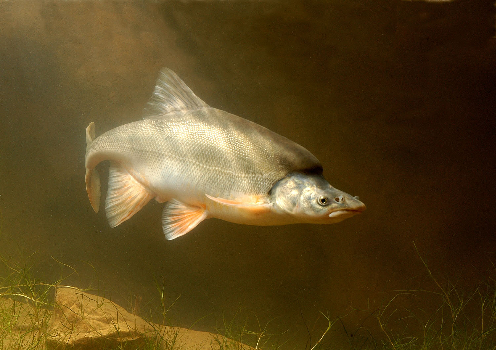
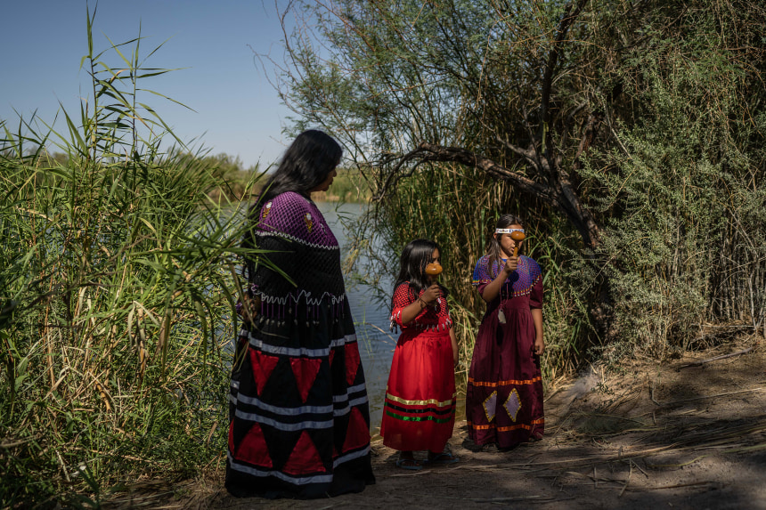

Despite legislation and conservation efforts, water levels throughout the Colorado River continue to decline. The following figure shows how the peak water flow rates (in cubic feet per second) have declined over the years. This data was collected at a location on the river just before entering the delta.
As a result of declining water levels, many peoples and ecosystems are put at risk. The humpback chub is an incredible species of fish with an iconic hump on its back. Humpback chubs are a species of fish that used to thrive in the turbulent flows of the Colorado river however, they were "listed as endangered by U.S. Fish and Wildlife Service in 1967". The reason? Reduced water flows in the Colorado River.
Another issue with the Colorado River is that the water is not equally distributed across the whole river. The states in the upper basin of the Colorado river tend to overuse the water. By the time the water has flown through the lower basin and reaches the Mexican border, the stream is weakened and polluted. A native American tribe called the Cucapá used to rely on the Colorado river both spiritually as well as for the food and water that is provided. Unfortunately, the water that used to make it to the river delta where the Cucapá live is now mostly blocked by the Morelos dam and diverted to farmers.
There are so many negative side effects of reduced flows in the Colorado River that it's pointless to try to list them all. To summarise, dams and humans overusing the water in the river is what is to blame for all of these issues. Clearly, the problems are severe enough that we need to take action and reduce our impact on the river that so many depend on.